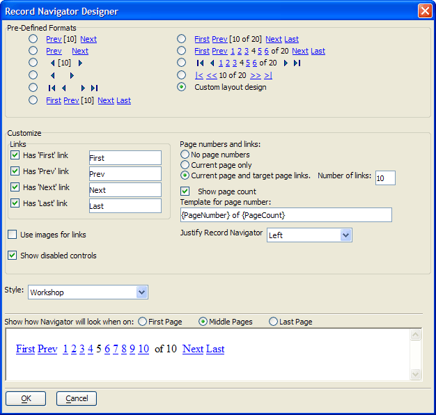

Record Navigator Designer
The Record Navigator Designer allows you to customize and create new record navigation button sets.
To define the record navigation controls on your web component.
Open the selected grid component from the <span class=Screen>Web Projects Control Panel</span>.
Display the Grid > Properties page.
Make sure that the Record Navigator > Record navigation position value is not set to "No navigation bar".
Click
 or in the Record Navigator
> Record navigation layout field to open the Record
Navigation Designer.
or in the Record Navigator
> Record navigation layout field to open the Record
Navigation Designer.

Optionally, select a format in the Pre-Defined Format region.
Optionally, select Custom layout design in the Pre-Defined Format region.
In the Customize Links region place checkmarks to the left of the link buttons that you want to display.
For each link button you display, optionally specify the text label to display.
Optionally, make a selection from the Page numbers and links region. The options are:
No page numbers:
Current page only:
Current page and target page links:
Optionally, change the Number of links to display. The maximum is 10.
Optionally, check Show page count. Page counts are visible in two of the three examples above.
Optionally, edit the Template for page number. Leave the {PageNumber} and {PageCount} fields unchanged.
Optionally, select a different alignment of the navigator buttons from the Justify Record Navigator list. The options are:
"Left"
"Center"
"Right"
Optionally, check Use images for links.
Optionally, check Show disabled controls.
Optionally, select a different style sheet from the Style drop-down list.
Click OK to save your changes or Cancel to discard your changes.
See Also
Limitations
Web publishing applications only.